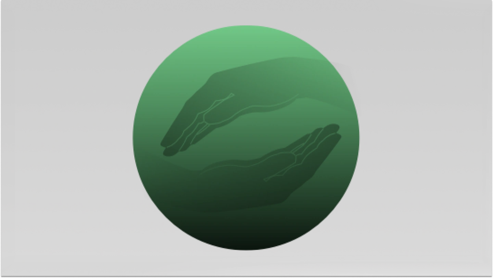
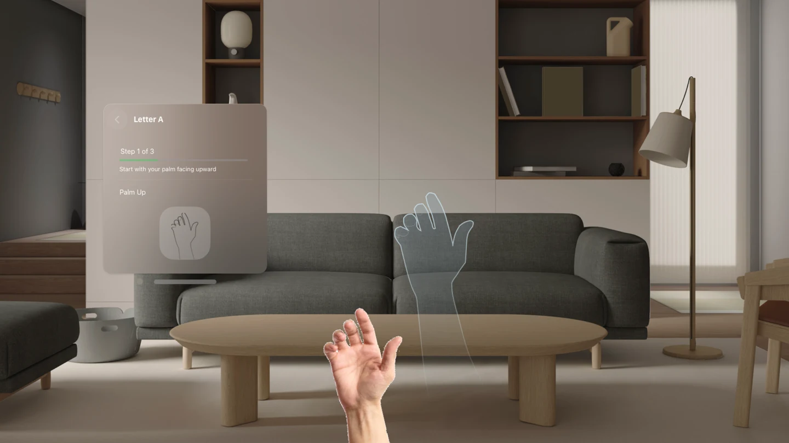
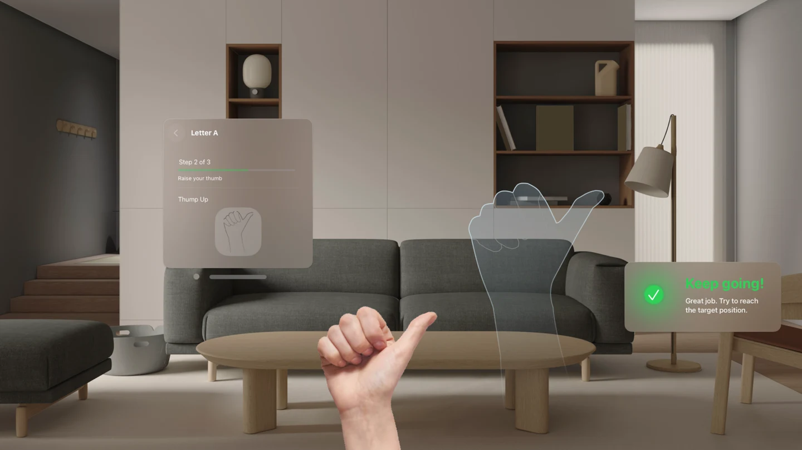
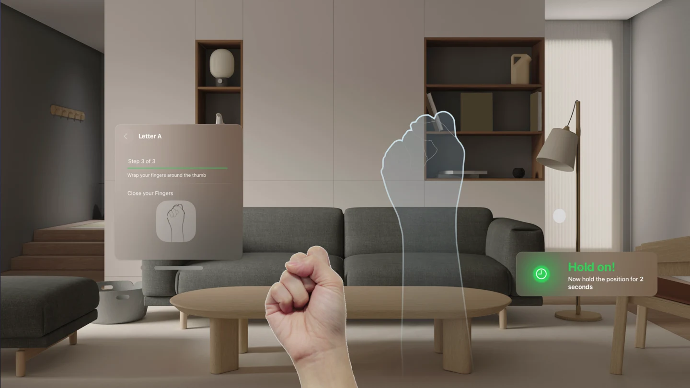

SignSync
Learning sign language through visual digital nudges and spatial computing.

Context
A conversation that started it
At the Apple Developer Academy, a conversation with a deaf teacher changed my perspective. We had to use an interpreter, and she told me something that stuck: in many situations, her smartphone is her 'best friend.' It made me realize that communication isn't a given.
I also learned that not all deaf people know sign language, often because traditional courses are inaccessible. That gap felt like something technology could actually bridge.

Challenge
The problem with video
Sign language is motor learning. Small variations in hand position can completely change a gesture's meaning. Yet, most learning tools rely on videos. You watch a screen, try to mimic it, and guess if you got it right.
The challenge was: how do you teach a precise physical skill without trapping the user behind a 2D screen or interrupting them with constant corrections?

Process
Nudges and Ghost Hands
My master's thesis explored how visual digital nudges influence decisions. SignSync tests if those same principles can guide motor learning.
Instead of explicit instructions, the experience uses semi-transparent 'ghost hands' in spatial computing. They act as visual nudges—guiding attention and encouraging imitation in real-time, right next to the user's own hands.

Solution
Learning through spatial imitation

Beyond SignSync